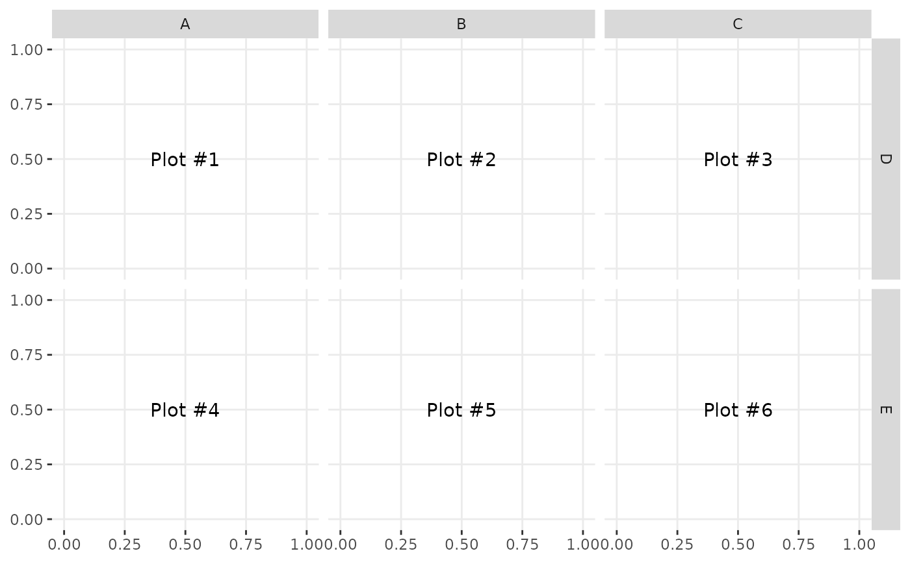

Make a generic matrix of ggplot2 plots.
ggmatrix(
plots,
nrow,
ncol,
xAxisLabels = NULL,
yAxisLabels = NULL,
title = NULL,
xlab = NULL,
ylab = NULL,
byrow = TRUE,
showStrips = NULL,
showAxisPlotLabels = TRUE,
showXAxisPlotLabels = TRUE,
showYAxisPlotLabels = TRUE,
labeller = NULL,
switch = NULL,
xProportions = NULL,
yProportions = NULL,
progress = NULL,
data = NULL,
gg = NULL,
legend = NULL
)Arguments
- plots
list of plots to be put into matrix
- nrow, ncol
number of rows and columns
- xAxisLabels, yAxisLabels
strip titles for the x and y axis respectively. Set to
NULLto not be displayed- title, xlab, ylab
title, x label, and y label for the graph. Set to
NULLto not be displayed- byrow
boolean that determines whether the plots should be ordered by row or by column
- showStrips
boolean to determine if each plot's strips should be displayed.
NULLwill default to the top and right side plots only.TRUEorFALSEwill turn all strips on or off respectively.- showAxisPlotLabels, showXAxisPlotLabels, showYAxisPlotLabels
booleans that determine if the plots axis labels are printed on the X (bottom) or Y (left) part of the plot matrix. If
showAxisPlotLabelsis set, bothshowXAxisPlotLabelsandshowYAxisPlotLabelswill be set to the given value.- labeller
labeller for facets. See
labellers. Common values are"label_value"(default) and"label_parsed".- switch
switch parameter for facet_grid. See
ggplot2::facet_grid. By default, the labels are displayed on the top and right of the plot. If"x", the top labels will be displayed to the bottom. If"y", the right-hand side labels will be displayed to the left. Can also be set to"both"- xProportions, yProportions
Value to change how much area is given for each plot. Either
NULL(default), numeric value matching respective length, orgrid::unitobject with matching respective length- progress
NULL(default) for a progress bar in interactive sessions with more than 15 plots,TRUEfor a progress bar,FALSEfor no progress bar, or a function that accepts at least a plot matrix and returns a newprogress::progress_bar. Seeggmatrix_progress.- data
data set using. This is the data to be used in place of 'ggally_data' if the plot is a string to be evaluated at print time
- gg
ggplot2 theme objects to be applied to every plot
- legend
May be the two objects described below or the default
NULLvalue. The legend position can be moved by using ggplot2's theme elementpm + theme(legend.position = "bottom")- a single numeric value
provides the location of a plot according to the display order. Such as
legend = 3in a plot matrix with 2 rows and 5 columns displayed by column will return the plot in positionc(1,2)- a object from
grab_legend() a predetermined plot legend that will be displayed directly
Memory usage
Now that the print.ggmatrix method uses a large gtable object, rather than print each plot independently, memory usage may be of concern. From small tests, memory usage flutters around object.size(data) * 0.3 * length(plots). So, for a 80Mb random noise dataset with 100 plots, about 2.4 Gb of memory needed to print. For the 3.46 Mb diamonds dataset with 100 plots, about 100 Mb of memory was needed to print. The benefits of using the ggplot2 format greatly outweigh the price of about 20% increase in memory usage from the prior ad-hoc print method.
Examples
# Small function to display plots only if it's interactive
p_ <- GGally::print_if_interactive
plotList <- list()
for (i in 1:6) {
plotList[[i]] <- ggally_text(paste("Plot #", i, sep = ""))
}
pm <- ggmatrix(
plotList,
2, 3,
c("A", "B", "C"),
c("D", "E"),
byrow = TRUE
)
p_(pm)

pm <- ggmatrix(
plotList,
2, 3,
xAxisLabels = c("A", "B", "C"),
yAxisLabels = NULL,
byrow = FALSE,
showXAxisPlotLabels = FALSE
)
p_(pm)